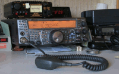
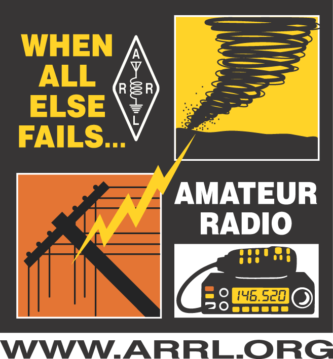

37d21m10s N, 122d4m31s W 212'
CM87xi
TS-2000 into X200 on roof
Los Altos CA 94024 USA
eric@n2vi.com

|
Not fully set up again after the move from New Jersey to California.
I participate when I can in Los Altos ARES and monitor
(2m call) 146.520
W6ASH 145.270-, 440.800+ 100.0
on El Camino Hospital roof, SPECS Mon 20:00
Other local frequencies to note:
AA6BT 146.115+ 100.0 SVECS Tue 20:00
146.595,145.570 Los Altos ARES
Crystal Peak, K6SNY 443.275+ 107.2
SARES, K6GL 145.170- 94.8 Mon 20:15, Tue 19:45
SCV Section, K6BEN 441.275+ 123.0 Thu 19:30
SCC ARA 10m, 28.385 USB Thu 20:00
K6FB 145.450-, 442.575+ 100.0
NASA 145.585
home
repeaters,NARCC
|eHam.net
|ARRL, SCV section
ReverseBeacon
Red Cross "Safe and Well" list
TS-2000 groups:
general,
software,
mods
rig:
* Kenwood TS-2000 into Diamond X200A on the roof
* Kenwood TH-G71 (2m/70cm FM) into duck+counterpoise or 1/4 mag-mount VU-1510
or twin-lead J-pole.
still in boxes after move:
20.1m center-fed doublet in trees at 50ft
* Yaesu FT-2600M (2m FM) into Arrow 146S (4 element Yagi, vertical)
* ICOM 2400A (2m/70cm FM) into Arrow J146/440 on 19ft pole for emergency base.
* ICOM 2410H (2m/70cm FM packet), BuxComm GLK, Thinkpad600E for digital modes;
sometimes used as a cross-band repeater for FM voice
* backup HF rigs: ICOM-735 and Yaesu FT-901DM.
* Powered by deep-discharge storage batteries on trickle charge,
with Powerpole connectors, or Alinco DM-330MV.
* Feedline is BuryFlex.
Diamond MX72N diplexer.
|
|
145.750 NPARC
146.520 national FM call
146.700- 141.3 W2PQG Wanaque
146.895- 151.4 WS2Q Morristown
147.030+ no PL W2TW Whippany
147.255+ 141.3 W2LI Murray Hill
162.550 weather
446.000 national FM call
449.175- 141.3 Chatham
449.975- 141.3 W2LI, NJ link
The bandplan includes repeater offsets of 600kHz for 2m, 5MHz for 70cm.
nets and meetings
Sun 21:00 147.030 NPARC
Mon 19:15 146.895 Red Cross N2ARC
1st Mon 19:30 Westfield Y, Scotch Plains
2nd Mon 19:30 Salt Brook School
3rd Mon 19:30 Will Grove Presby, Martine+Raritan
4th Mon 19:30 Salt Brook School
all 19:30 146.895 NJ VN Early
all 22:00 449.975 UCTN
all 22:30 146.700 NJ VN Late
|
useful links:
AES
BuxComm
The Rascal GLK kit worked fine for me.
But read the reviews at eHam.net.
Davis RF
Gigaparts
ICOM
Kenwood
SSB
Yaesu
RF exposure calulator
local hamfests
KC2RLM weather station
Sussex County ARC packet and repeaters
hams over GoggleMaps
Greene County ARES jumpkit
Ohio ARES
Ham Radio Deluxe
twin-lead J-pole
antennas, duplexers, etc.
M0SBF attic antenna experience
Linux radio software
Linux radio hardware
RF interference sound files
ham at Columbia search site
famous hams
KB7YOU ops
CQ WE
DXcluster
(tutorial)
NJDXA
ARISS contact in Japan 8N3M on 7jan05
|
{kind=link}